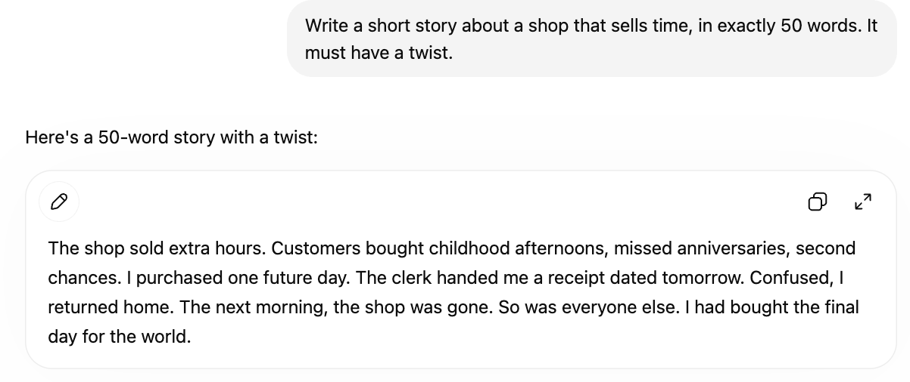
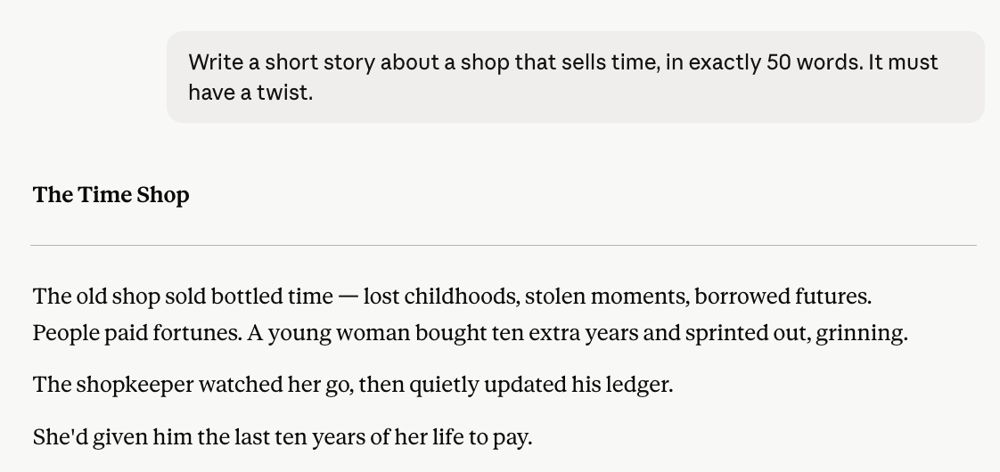
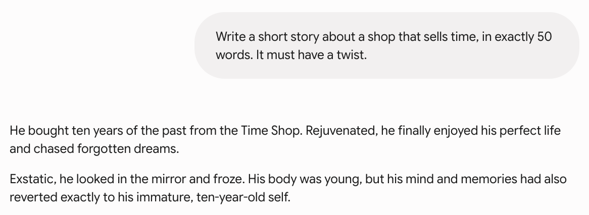

I gave all three AI chatbots the exact same 50-word creative writing prompt and counted the results myself. The differences in constraint-following and storytelling were bigger than expected.
Most AI comparison articles tell you which chatbot is "best" based on benchmarks you'll never run yourself. I wanted something different — a test I could actually do, with results you can verify by counting. So I gave ChatGPT, Claude, and Gemini the exact same creative writing prompt and compared what came back.
The prompt was deceptively simple. It tests three things at once: creativity, the ability to follow a strict constraint, and storytelling craft. Here's exactly what I asked all three:
The "exactly 50 words" part matters. It's an objective constraint — either the model hits it or it doesn't, and you can count. The "twist" requirement tests whether the model can do more than just describe; it has to construct something with a payoff. Here's what each one produced, with the word count I verified myself.
Word count: 50 — exact. ChatGPT was the only one of the three to hit the target precisely. The twist is apocalyptic: the "future day" the narrator bought turns out to be the world's last. It's a clever escalation, though the setup leans slightly toward telling rather than showing.

Word count: 49 — one short. Claude missed the target by a single word, but produced what I found to be the strongest twist of the three. The currency for buying time is time itself — she paid with the final years of her own life. It's dark, clean, and lands without needing to be explained.

Word count: 48 — two short. Gemini was furthest from the target and also included a spelling error ("Exstatic" instead of "Ecstatic"). The twist idea — getting younger but losing your memories and growth along with it — is solid, but it's a more familiar concept than the other two, and the execution reads slightly flatter.

Here's how the three stacked up across the dimensions the prompt was actually testing:
| Criteria | ChatGPT | Claude | Gemini |
|---|---|---|---|
| Word count accuracy | 50 ✅ | 49 | 48 (+ typo) |
| Twist quality | ★★★★ | ★★★★★ | ★★★ |
| Writing craft | ★★★★ | ★★★★★ | ★★★★ |
This is one prompt, so it's a snapshot, not a verdict on which model is universally better. But the pattern is consistent with what longer testing tends to show. ChatGPT was the most reliable at following the precise instruction — when you say "exactly 50 words," it treats that as a hard rule. If you need an AI that respects constraints precisely, that reliability matters.
Claude produced the most emotionally resonant writing. The twist didn't just surprise — it recontextualized the whole story in a single sentence, which is what good short fiction does. For creative writing where the quality of the prose and the impact of the idea matter more than hitting an exact word count, Claude had the edge here.
Gemini wasn't bad — the story was coherent and the concept was reasonable. But it missed the constraint by the most, included a typo, and the idea felt more familiar. In a three-way creative test, it came third.
If you need precise instruction-following, ChatGPT was the most reliable here — it hit exactly 50 words when the other two didn't. If you care most about the quality and impact of the writing itself, Claude produced the best story. Gemini was competent but came third on this particular test. The honest takeaway: the "best" chatbot depends entirely on whether you value constraint-following or creative craft more.